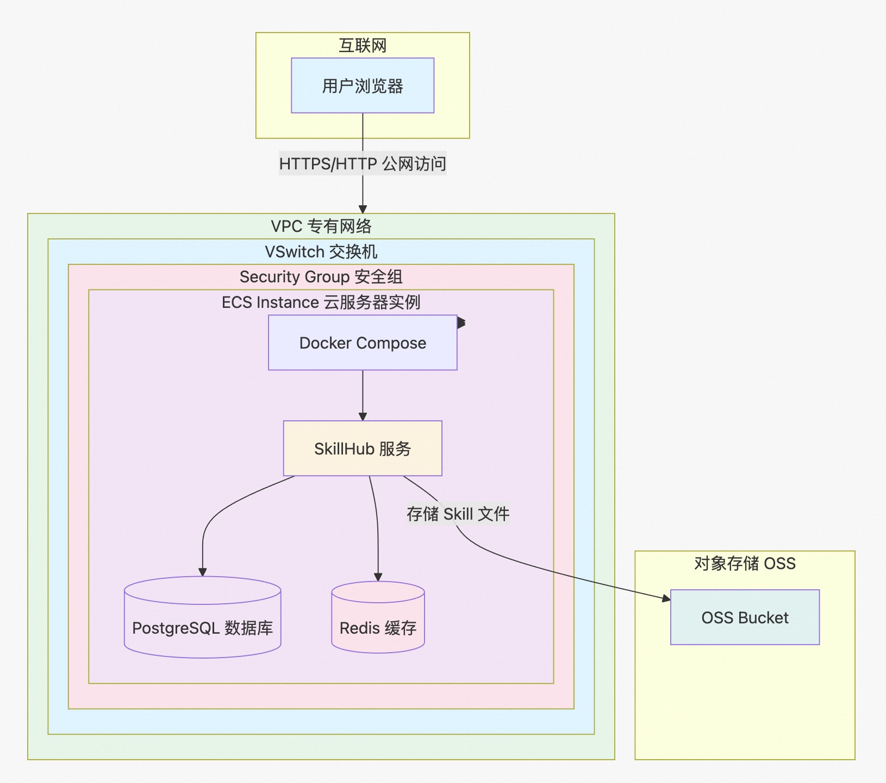
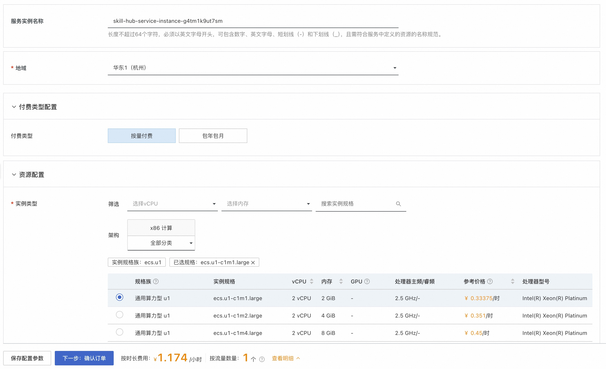
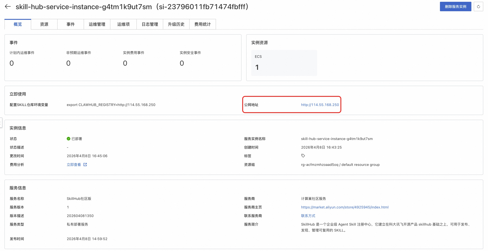
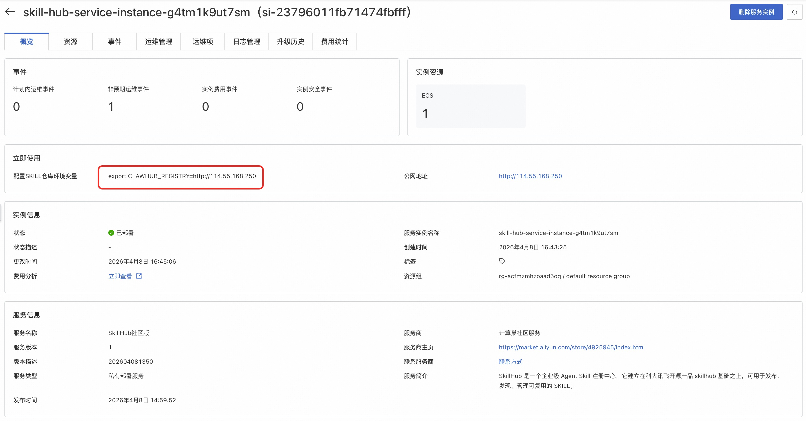

概述
SkillHub 是一个企业级 Agent Skill 注册中心，它建立在科大讯飞开源产品 skillhub 基础之上，可用于发布、发现、管理可复用的 SKILL。
本方式提供部署单机版 SkillHub 的解决方案，其底层通过 Docker Compose 快速部署 skillhub, 此种部署方式不具备高可用、可伸缩的特性，不适合生产环境下使用，推荐用于开发测试。
前提条件
部署 SkillHub 社区版服务实例，需要对部分阿里云资源进行访问和创建操作。因此您的账号需要包含如下资源的权限。
说明：当您的账号是RAM账号时，才需要添加此权限。
| 权限策略名称 | 备注 |
|---|---|
| AliyunECSFullAccess | 管理云服务器服务（ECS）的权限 |
| AliyunVPCFullAccess | 管理专有网络（VPC）的权限 |
| AliyunROSFullAccess | 管理资源编排服务（ROS）的权限 |
| AliyunComputeNestUserFullAccess | 管理计算巢服务（ComputeNest）的用户侧权限 |
| AliyunOSSFullAccess | 管理对象存储服务（OSS）的权限 |
计费说明
SkillHub 社区版在计算巢部署的费用主要涉及：
- 所选vCPU与内存规格
- 公网带宽
- 系统盘资源
- OSS 资源
部署架构

参数说明
| 参数组 | 参数项 | 说明 |
|---|---|---|
| 服务实例 | 服务实例名称 | 长度不超过64个字符，必须以英文字母开头，可包含数字、英文字母、短划线（-）和下划线（_） |
| 地域 | 服务实例部署的地域 | |
| 付费类型配置 | 付费类型 | 资源的计费类型：按量付费和包年包月 |
| 资源配置 | 实例类型 | 可用区下可以使用的实例规格 |
| 实例密码 | 长度8-30，必须包含三项（大写字母、小写字母、数字、 ()`~!@#$%^&*-+=|{}[]:;'<>,.?/ 中的特殊符号） | |
| SkillHub admin 密码 | SkillHub 默认账号 amdin 的密码设置，长度8-30，必须包含三项（大写字母、小写字母、数字、 ()`~!@#$%^&*_-+=|{}[]:;'<>,.?/ 中的特殊符号） | |
| 公网访问选项 | 是否启用公网访问 | |
| 可用区配置 | 可用区 | ECS实例所在可用区 |
| 专有网络选项 | 可选择新建专有网络或复用已有专有网络 | |
| 专有网络IPV4网段 (选中新建专有网络) | 设置该专有网络所处网段 | |
| 交换机子网网段 (选中新建专有网络) | 设置该专有网络的交换机所处网段 | |
| VPC ID (选中已有专有网络) | 资源所在VPC | |
| 交换机ID (选中已有专有网络) | 资源所在交换机 | |
| 存储配置 | OSS Bucket选项 | 可选择新建 Bucket 或复用已有 Bucket |
| 已有 Bucket 名称(选中已有 Bucket) | 前置创建完毕的、无存储任何数据的空闲 Bucket 名称 | |
| OSS AK选项 (选中已有 Bucket) | 可选择新建 AK 或服用已有 AK，以便能访问到具体 Bucket |
部署流程
- 访问计算巢SkillHub社区版，按提示填写部署参数：

- 参数填写完成后可以看到对应询价明细，确认参数后点击下一步：确认订单:
- 确认订单完成后同意服务协议并点击立即创建，进入部署阶段：
- 等待部署完成后就可以开始使用服务，进入服务实例详情点击 "公网地址/内网地址"，以访问 SkillHub Web 页面：

- Web 页面注册账号 (默认账号，用户名 admin，密码是创建服务时自行设置的)：
- Web 页面即可执行发布 Skill、搜索 Skill、控制台管理 Skill 等操作：
skillHub 与 clawhub 集成
当使用 openclaw，通常会基于 clawub 检索并安装具体 skill，以拓展 openclaw 能力。
为实现 skillHub 与 clawhub 集成，具体需要做如下事情：
-
更新 CLAWHUB_REGISTRY 环境变量
shell 环境依次执行如下命令即可 ```
编辑 ~/.bashrc
echo 'export CLAWHUB_REGISTRY=http://114.55.168.250' >> ~/.bashrc
立即生效
source ~/.bashrc
验证
echo $CLAWHUB_REGISTRY ```
注意：上述的 "export CLAWHUB_REGISTRY=http://114.55.168.250"，该内容取自 SkillHub 服务实例详情页的红框部分，实际配置时需按对应服务实例详情页面显示的内容，进行替换。

-
查询并安装 skill
以查询 Git 关键字的 skill，并安装 git-operations skill 为例，shell 环境依次执行如下命令即可， ```
搜索 Git 相关技能
npx clawhub search git
查看详细信息
npx clawhub info git-operations
安装单个技能
npx clawhub install git-operations ```